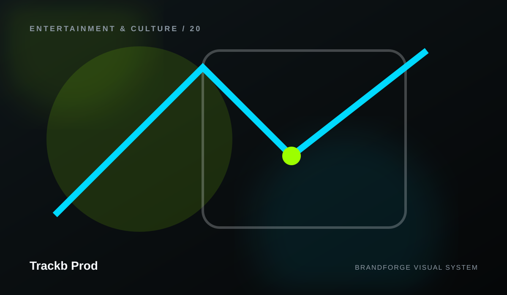

Trackb Prod
Every important path, in one place.
A human-readable map makes a large website easier to scan and gives visitors a reliable fallback when they are not sure where to go.

Trackb Prod
A human-readable map makes a large website easier to scan and gives visitors a reliable fallback when they are not sure where to go.
